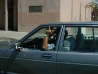
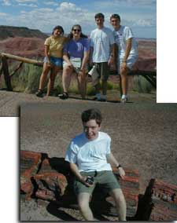
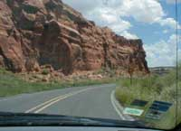
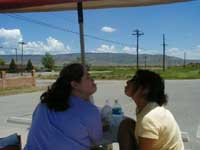
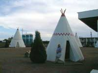

|
|
Day 7 [7/27/99]
From: Santa Fe, NM
To: Williams, AZ
Total Miles: 400
Sites Seen: Albuquerque, Los Lunas, The Desert, Flagstaff, Williams,
Sketchy Buffalo, Petrified Forest/Painted Desert, Twin Arrows
Today's Entry By: Rachel Caplan |
 |
 |
| Albuquerque. |
|
|
Today was a beautiful day. Not much happened today. We
didn’t see much today except really pretty things. The insanity that normally reaches
us around ten or eleven at night has begun to hit me around noon. Suddenly going fast down
steep hills, or passing other cars along the road has provided me with many laughs. The
others look at me with fright; I just keep laughing. So we woke up this morning in Santa
Fe. Bebe sent us out of the house with our cooler and snackbox filled. Alex started behind
the wheel and we were on our way to Williams, AZ. After having a bit of trouble leaving
the city we made our way to Albuquerque. We liked it there because it was a populated city
and it was "pretty." There were many pink and beige buildings and turquoise lamp
posts. |
|
We then crossed the Rio Grande. We rode along the Rio Grande
and then through some valleys. The valleys were pretty. As we drove further we saw some
huge canyon-like holes in the ground. They were pretty. We drove on more pretty roads that
John, Alex, and Baker thought would be really cool to drive on in a convertible. I
didn’t think it would be. At this point in the ride John began to remind me much of
my father as he successfully yelled at us to slow down at least once every five minutes
(that adds up to at least 120 times in the day). But we can’t blame him too much; we
did drive down some windy roads with steep hills. They were very pretty. For lunch we
stopped at Lotaburger. This made me happy. Since all we wanted to do was use their picnic
tables Baker and John went to buy a soda and fries, that way we wouldn’t get kicked
out. For dessert we got to eat the yummy cookies that John’s mom sent him for his
birthday. |
 |
| The four of us stand above a forest, and John points out that,
"IT'S PETRIFIED!" |
|
|
|
 |
| So all the days of Mahalalel were eight hundred and ninety-five years; and he
died. - Genesis 5:17 |
|
|
John’s still feeling sick and it’s beginning to
affect his appetite. He’s not enjoying the food so much. Poor John. We saw sheep
today. I have no clue where we were, but I like seeing animals on the road. There were
black sheep, also, so Alex and I sang Baa Baa Black Sheep. Unfortunately we couldn’t
remember who the three bags of wool were for. All we could remember was that the last one
was for the little man who lived down the lane. |
|
At 3:17 we drove under a rain cloud. At 3:20 we drove out of
it. Right outside of Gallup it was really pretty. At the border of NM/AZ we stopped at our
first attraction of the day to see the "cave" Buffalo. We had to enter through
some small shop run by Indians. A small (even shorter than me) lady led us out the back to
an open area. She told us to just follow the signs. As we walked along a path signs read
"CAUTION: STAY ON THE PATH" and "WE ARE NOT RESPONSIBLE FOR ANY
ACCIDENTS". When we got to the Buffalo they were nasty and smelly. There were two
buffalo standing together licking rocks. We were rather disgusted. This was not so pretty. We
finally went over a hill that made us get butterflies in our stomach. I loved it. John
hated it [Ed. note: white knuckles do not denote hatred]. We drove through a dip that had
a creek running through it. |
 |
| Rachel and Alex block a perfectly good picture of a
mountain. |
|
|
|
 |
| Alex is thwarted once again by Buffalo-resistent TeePees. |
|
|
We paid ten dollars to go through the Painted Desert and
Petrified Forest. That was pretty, though. One time Alex and I wanted to climb one of the
little hills so we asked the boys to come pick us up on the other side. While it was very
pretty on top, getting down on the other side was a different story. But I had fun. We,
especially I, sang a lot today in the car.
At 5:45 we entered a big storm with lots of lightning. It was pretty. Baker taught me
all about lightning so I wasn’t as scared as I would normally be, so I could
appreciate how pretty it was. A little bit later we were out of the storm. |
|
We drove through Twin Arrows. This is a town we heard about
in all of our books. There wasn’t much there except for the twin arrows. So we took
our pictures. We also saw our first sign for L.A. today. It said "LOS ANGELES
487" I got very excited. All of a sudden we went from the desert to a lush forest
as we were entering Flagstaff. We ate dinner in Flagstaff at Miz Zip’s. The town was
very nice. I wasn’t too happy with Miz Zip’s because they didn’t have the
soup or chili that I wanted. So I ate my daily Grilled Cheese. John, on the other hand,
felt healthy enough to eat and really enjoyed his food. I did like the bouncy balls they
sold in the quarter machine in the lobby.
We really liked the temperature here. It got down to 69 degrees. We were very excited
about that.
We spent the night at El Rancho in Williams, AZ. Somehow we managed to find the hotel
that all the ghetto bootie teenagers stayed at. It provided us with much entertainment. We
attempted to go to bed early so we could get started earlier the next day. So we went to
bed. |
 |
| Baker and Alex pose with debris in the road. |
|
|
|